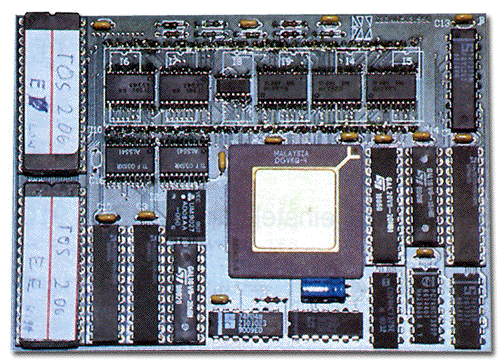

|
|
10.13 Board 20
Atari Board 20 Beschleuniger
"Board 20" der Firma MAXON Computer war eine weitere
Beschleunigerkarte mit MC68020 Prozessor.
Dadurch, das die Platine beidseitig bestückt war, teilweise
mit SMD Bauteilen sowie die Verwendung von 6fach-Multilayer-Technik
machten das Board relativ klein und kompakt so das es problemlos in
die kleinen" Ataris wie 520/1040 ST eingebaut werden konnte.
Die MC68020 CPU wurde mit 16 MHz getaktet. Ihr zur Seite stand ein
32 kB großer Cachespeicher. Ein Steckplatz für einen
Coprozessors (FPU) war nicht vorgesehen.
Als Betriebssystem wurde ein angepasstes TOS 1.06 (vom 1040 STE)
verwendet. Auch der Einsatz eines TOS 2.06 bereitete keine Probleme.
Der Cache wurde über eine spezielle Software geschaltet.
Außerdem lieferte MAXON ein kleines Accessory mit, in dem
festgelegt werden konnte, welche Programme mit und welche ohne
aktivierten Cache ausgeführt werden sollten. Das Board 20 kostete
Anfang 1992 inkl. gepatchtem TOS 1.06 ca. 998,- DM
 Abbildung 1 - Maxon Board 20 Beschleuniger
Artikel von Bernd Maedicke
|
|
|